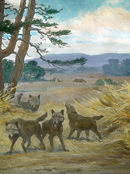

The Dire Wolf lived in both North and South America. Their remains have been found in plains, grasslands, and some forested mountain ranges of North America, and in the arid Savannah of South America. They have been rarely found about 25 degrees latitude. This could be beacuse of temperature, prey, or the limitaions imposed by the Laurentide and Cordilleran ice sheets that existed at the time.
The reason they lived in these areas is most likely because their prey also lived their. Dire Wolves often ate ancient horses, ground slothes and mamouths. These types of creatures usually lived in mroe open grassy biomes, and mayby in some light forests. The Dire WOlves had to stay near to their prey in order to be able to hunt.